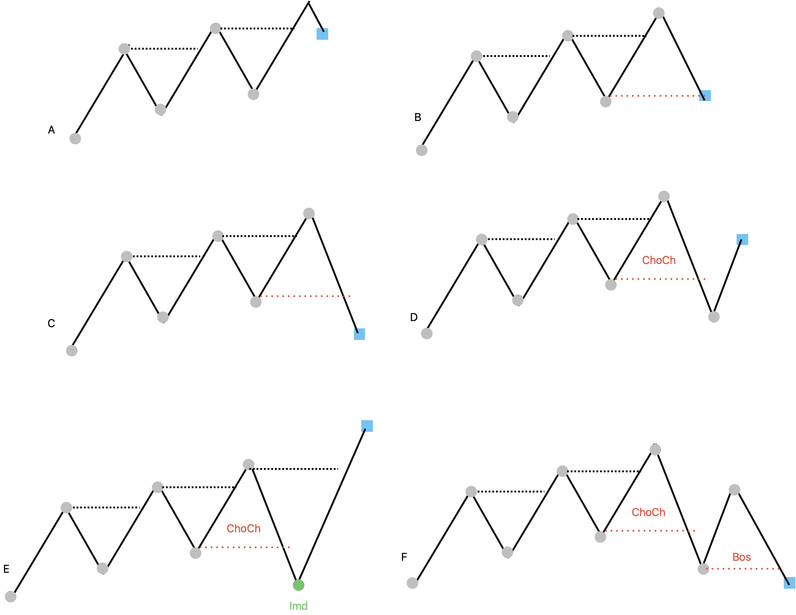

Orderflow Context - BoS, MSS, Current Leg, Controlled Chase
BoS; its counter-direction shift is MSS. MSS opens when the live probe breaks the protected anchor: latest HL in a bullish sequence, latest LH in a bearish sequence. Orderflow does not choose Layer 4's thesis; it gives downstream layers named references for controlled chase: protected anchor, disruption point, decision point, probe relation, and MSS resolution.
00 Core Concept
Orderflow is the sequence of structural points used to describe swing progression. A bullish sequence wants higher highs and higher lows. A bearish sequence wants lower lows and lower highs.
bullish: HH, HL, HH, HL, ... bearish: LL, LH, LL, LH, ... mixed: progression exists, but alternation is messy unknown: not enough usable points

Discretionary -> Algorithm mapping
Step 1 · Remember structural points State Store
The channel does not scan raw history. It reads State Store objects: LTF structure sequence points, HTF ITR pivots, and optional LTR fallbacks.
Step 2 · Append live probe, not pivot Structure projection
The live probe answers whether price is attacking the next level, pulling into OTE, threatening the protected anchor, or resolving an MSS monitor. It is not retained as confirmed history.
Step 3 · Project pressure, not thesis Layer 3 output
The output is soft context: direction, quality, live pressure, MSS monitor state, and source references. Evidence Compiler may qualify it; Layer 4 remains the deterministic thesis owner.
01 Purpose
Orderflow has two primary jobs: complement Layer 4 thesis context and complement controlled chase entry.
Layer 4: what thesis are we in? Orderflow: what is the current leg doing? Layer 5: is this executable now?
Layer 4 complement
Layer 4 can say macro thesis = bullish and phase = C / pullback. Orderflow says whether that pullback is still extending or resolving.
Bullish Phase C + LTF orderflow bullish -> pullback likely resolving -> entry opportunity may be forming Bullish Phase C + LTF orderflow bearish -> pullback leg still extending -> wait
Controlled chase complement
Controlled chase needs a structured path to follow. Orderflow supplies the named references instead of forcing Layer 5 to infer them from raw candles.
Layer 4 thesis = bullish LTF orderflow has bearish pullback pressure MSS monitor opens D decision point forms live probe moves toward the execution leg live probe starts resolving / reclaiming controlled chase permission becomes possible
mss_monitor_status, decision_point_ref, and protected_anchor_ref. Layer 5 computes ote_posture later after Layer 4 defines the active thesis leg.
02 Point Source Policy
The point source is intentionally different by timeframe. LTF is used for execution posture, so it starts cleaner. HTF is used for macro posture, so regular ITR should be enough.
LTF · structure sequence initial policy
LTF orderflow uses structure_sequence plus structure_probe produced by every active Structure Context instance. Confirmed pivots are labeled as anchor swing points (HH/HL/LH/LL) by the orderflow engine — these are an orderflow concept, not the same as the raw source events.
LTF source = structure_sequence + structure_probe
shape = last 8 confirmed structure points + 1 live probe
questions:
current leg = impulse | pullback | anchor_threat | broken | unknown
probe relation = near protected anchor | reclaiming | breaking away
protected anchor respected?
MSS trigger (live probe — gate for E.pullback_developing):
bullish: protected anchor = latest confirmed HL
probe breaks below HL → mss_regime = "mss_watch"
bearish: protected anchor = latest confirmed LH
probe breaks above LH → mss_regime = "mss_watch"
→ fires the moment price probes beyond the protected anchor
MSS debug field (additional context, not the gate):
mss_watch_confirmed: confirmed counter-pivot exists in the sequence
or HH or HL (bearish)
→ fires when a confirmed counter-pivot exists in the sequence
→ useful for downstream phase C / confirmed disruption checks
HTF · regular ITR sequence initial policy
HTF orderflow uses confirmed ITR highs and lows. HTF is naturally slower, and the output is macro posture apart from P/D bias.
HTF source = itr_sequence questions: macro orderflow direction = bullish | bearish | mixed | unknown macro quality = clean | weak | broken macro shift watch or confirmed shift
Source boundary — naming resolves it design decision
Orderflow and Structure are separate channels with separate anchor concepts. No source config is needed because the event name tells you which channel to read.
MSS / BoS → orderflow channel → reads its own swing/pivot sequence SB / ChoCh → structure channel → reads ITR / LTR anchors "LTF MSS then LTF SB" = two reads from two channels — no ambiguity.
The orderflow swing sequence happens to be built from confirmed LTF structure pivots stored in the State Store, but that is an implementation detail. Conceptually, orderflow owns its own sequence; the event name is the routing key.
Component ownership
Structure Context: owns SB / ChoCh structural lifecycle over STR / ITR / LTR anchors owns P/D range and ratchet reset records confirmed structure sequence points at semantic confirmation/reset moments projects structure_probe from current lifecycle + cursor does not interpret orderflow direction State Store: retains structure_sequence for every active StructureEngine instance keeps last 8 confirmed structure points by default exposes recent_structure_sequence_points and structure_probe LTF and HTF both retain structure sequences unless that structure context is disabled Orderflow Context: is a separate Layer 3 context channel consumes structure_sequence + structure_probe on LTF by default consumes itr_sequence on HTF by default owns BoS / MSS over swing-point or pivot-sequence anchors maintains direction, live pressure, MSS monitor, protected refs writes OrderflowSnapshot back to State Store / Fusion surface
The comparison rule is simple: a high point compares to the previous high; a low point compares to the previous low.
$$ high_i > high_{i-1} \Rightarrow HH \qquad high_i < high_{i-1} \Rightarrow LH $$ $$ low_i > low_{i-1} \Rightarrow HL \qquad low_i < low_{i-1} \Rightarrow LL $$03 MSS Monitor
MSS is the orderflow counter-shift monitor, not an immediate reversal verdict. In the image, C disrupts bullish orderflow when the live probe breaks the latest confirmed HL. That opens a monitor. D is the decision point. E resolves as inducement. F confirms reversal.
C · disruption opens monitor watching_resolution
bullish: confirmed_direction = bullish protected_anchor = latest confirmed HL probe breaks below HL → MSS opens mss_monitor_status = watching_resolution bearish: confirmed_direction = bearish protected_anchor = latest confirmed LH probe breaks above LH → MSS opens mss_monitor_status = watching_resolution
The market is unresolved here: possible inducement, possible reversal.
D · decision point forms right shoulder
decision_point_ref = candidate lower high / right shoulder disruption_point_ref = lower low that broke bullish protected anchor from_direction = bullish candidate_direction = bearish
The monitor now has a concrete point to watch. This is what controlled chase can use instead of guessing from candles.
E/F · resolve inducement or confirm reversal resolution
E inducement: mss_monitor_status = resolved_inducement confirmed_direction = bullish live_pressure = reclaiming F reversal: mss_monitor_status = confirmed_reversal confirmed_direction = bearish live_pressure = none sequence = LL, LH, LL...
04 Snapshot Contract
The OrderflowSnapshot is the current truth emitted to Interpreter and Fusion. Evidence Compiler consumes this shape and may turn it into soft support or tilt.
OrderflowSnapshot: confirmed_direction = bullish | bearish | mixed | unknown regime = directional | mss_watch | compression | sweep_range | unknown quality = clean | weak | broken live_pressure = none | pullback_extending | anchor_threat | reclaiming | breakaway_watch mss_monitor_status = none | watching_resolution | resolved_inducement | confirmed_reversal | failed source = structure_sequence | itr_sequence window_size = 6 confirmed_sequence = HH, HL, HH, HL... sequence_with_probe = HH, HL, HH, HL, probe... probe_label last_shift_at supporting_itr_refs supporting_anchor_refs protected_anchor_ref disruption_point_ref decision_point_ref range_ref probe_ref probe_breaks_protected_anchor = true | false probe_relation = above_active_high | below_active_low | upper_half | lower_half | inside_range | outside_range | unknown mss_trigger_source = probe_vs_protected_anchor | confirmed_counter_sequence | none liquidity_annotations = EH / EL cluster refs only, not direction labels pullback_status = extending | decelerating | resolving | broken | unknown timeframe evaluated_at blocked_reason = insufficient_points | stale_sequence | noisy_overlap | compression
confirmed_direction comes from confirmed anchors only. probe_relation and live_pressure are posture/execution context and must not flip trend by themselves.EH / EL Annotations
Equal highs and equal lows are explicitly assigned by Orderflow, but only as liquidity annotations. They are not part of the core directional alphabet that decides confirmed_direction.
Core direction labels: HH = higher high HL = higher low LH = lower high LL = lower low Annotation labels: EH = equal high cluster near a confirmed high anchor EL = equal low cluster near a confirmed low anchor
Assignment rule same-side comparison
If a high is equal to the previous same-side high within tolerance, record an EH annotation on that anchor cluster. If a low is equal to the previous same-side low within tolerance, record an EL annotation. Do not fold the point into HH, HL, LH, or LL.
Allowed effects soft context
EH/EL can lower continuation confidence, set regime = compression or sweep_range, and create liquidity_annotations that Liquidity Context or Evidence Compiler may later promote into monitored liquidity candidates.
Forbidden effects no direction decision
EH/EL must not flip confirmed_direction, confirm reversal, invalidate a thesis, or trigger an entry by itself. Direction still comes from HH/HL/LH/LL plus MSS monitor resolution.
Details Page
The case-by-case classification notes live in 305-orderflow-details.html. That page assigns the algorithm intent for A-H examples, including compression and sweep-range brakes.
05 Algorithm
No orderflow implementation exists yet. This section is the proposed engine skeleton for the future OrderflowContext channel. The engine should behave as a lifecycle detector, not merely a label calculator.
# proposed: OrderflowContext.on_bar() def on_bar(self, cursor, state_store) -> OrderflowSnapshot: source = self._source_for_timeframe(cursor.timeframe) confirmed_points = state_store.orderflow_points( source=source, limit=self.probe_points, ) probe = state_store.orderflow_probe(source=source) confirmed_labels = self._classify_confirmed_points(confirmed_points) confirmed_direction, quality = self._score_direction(confirmed_labels) regime, range_ref, blocked_reason = self._score_regime( confirmed_points, confirmed_labels, confirmed_direction, ) probe_relation, live_pressure = self._classify_probe( probe, confirmed_points, regime, ) monitor = self._update_mss_monitor( direction=confirmed_direction, regime=regime, points=confirmed_points, probe=probe, ) return OrderflowSnapshot( confirmed_direction=confirmed_direction, regime=regime, quality=quality, live_pressure=monitor.pressure or live_pressure, mss_monitor_status=monitor.status, source=source, confirmed_sequence=confirmed_labels[-self.window_size:], probe_relation=probe_relation, range_ref=range_ref, blocked_reason=blocked_reason, evaluated_at=cursor.timestamp, supporting_refs=[p.ref for p in confirmed_points], )
# compare same-side points only def classify_point(point, previous_same_side): if point.side == "high": if point.price > previous_same_side.price: return "HH" if point.price < previous_same_side.price: return "LH" return "EH" if point.price > previous_same_side.price: return "HL" if point.price < previous_same_side.price: return "LL" return "EL" # scoring is intentionally soft; probe is excluded bullish_score = count(["HH", "HL"] in recent_labels) bearish_score = count(["LL", "LH"] in recent_labels) quality = "clean" if alternation_is_clean else "weak"
# bullish example
if confirmed_direction == "bullish":
protected = latest_confirmed_HL
if probe.price < protected.price and monitor.status == "none":
monitor.status = "watching_resolution"
monitor.pressure = "anchor_threat"
monitor.disruption_point_ref = probe.ref
if monitor.status == "watching_resolution":
monitor.decision_point_ref = candidate_LH_ref
if bullish_reclaim_seen:
monitor.status = "resolved_inducement"
monitor.pressure = "reclaiming"
elif bearish_LL_LH_LL_confirmed:
monitor.status = "confirmed_reversal"
monitor.pressure = "none"
confirmed_direction = "bearish"
Layer handoff
State Store structure_sequence + Structure-projected structure_probe -> Orderflow Context -> State Store orderflow object -> Interpreter projects OrderflowSnapshot -> Fusion includes orderflow context -> Evidence Compiler qualifies soft support / tilt -> Layer 4 may use it as context, not verdict
06 Config
There is no committed orderflow: config block yet. The existing config already exposes the structure tier, pivot tiers, and structure sequence retention limit that Orderflow will consume.
# ultrab/src/ultrab/replayer/config.yaml pivot_events: enabled: true mode: conservative str_bars: 2 compute: str: true itr: true ltr: true structure: enabled: true tier: "itr" # "itr" default, or "ltr" structure_sequence_limit: 8
# proposed future block orderflow: enabled: true window_size: 6 probe_points: 8 higher_timeframe_source: itr_sequence # LTF is fixed to structure_sequence mss_monitor: enabled: true require_decision_point: true regimes: compression_enabled: true sweep_range_enabled: true blocked_reasons_enabled: true
# proposed OrderflowContext.__init__() self.enabled = bool(cfg.get("enabled", True)) self.window_size = int(cfg.get("window_size", 6)) self.probe_points = int(cfg.get("probe_points", 8)) # LTF source is fixed; only HTF source is configurable self.lower_source = "structure_sequence" self.higher_source = cfg.get("higher_timeframe_source", "itr_sequence") monitor_cfg = cfg.get("mss_monitor", {}) self.mss_enabled = bool(monitor_cfg.get("enabled", True)) self.require_decision_point = bool(monitor_cfg.get("require_decision_point", True))
07 Open Issues · Edge Cases · Next Milestone
MSS and SB/ChoCh are separate channels. Structural SB / ChoCh (last_sc.choch, structureEngine.py) is a close-through event over ITR/LTR anchors — one bar, immediate. Orderflow MSS fires when the live probe breaks the latest confirmed HL (bullish) or LH (bearish) in the orderflow swing sequence. The event name is the routing key: MSS → read orderflow; SB/ChoCh → read structure. The same visual move can create a structural SB first and an orderflow BoS later; those are separate facts. EC's ltf_counter_choch reads the structural event for Phase D chronology. mss_watch_confirmed is emitted when a confirmed counter-pivot exists in the orderflow sequence — additional context, not the MSS gate.
confirmed_direction ≠ structural ChoCh. confirmed_direction flipping to counter-HTF requires accumulating 4+ scored pivot points (LH/LL for bearish, HH/HL for bullish). It lags behind structural ChoCh (last_sc.choch) and the initial MSS disruption. A grinding pullback can hold LTF bearish bias structurally while orderflow never reaches the clean-directional threshold. EC consumers must choose the stream by boundary: structural ChoCh for fresh one-bar chronology, orderflow MSS / confirmed_direction + regime == directional for slower P/D flip confirmation.
Equal highs / equal lows. Settled direction: Orderflow assigns EH/EL only as liquidity annotations or cluster refs. They do not become HH/HL/LH/LL, do not flip direction, and do not trigger entry. They may lower continuation confidence, set regime = compression | sweep_range, or create a Liquidity Context candidate.
Thresholds. Midpoint buffers, equal-point tolerance, stale-sequence windows, and compression / sweep-range detection thresholds still need implementation-test values.
Evidence Compiler scoring. This note defines the OrderflowSnapshot. The candidate weighting rules live after Fusion and should be documented separately.
LTF source too slow or noisy. If structure sequence points lag too much, switch LTF to ITR. If that is too noisy, try LTR or a stricter Orderflow anchor-point filter.
Implementation pass. Add an Orderflow Context channel that reads State Store points and the structure-projected live probe, writes lifecycle fields, and exposes them through Interpreter/Fusion: confirmed_direction, regime, live_pressure, range_ref, probe_relation, mss_monitor_status, decision_point_ref, protected_anchor_ref, and liquidity_annotations.
Method assigned. The case-based algorithm intent is now documented in 305-orderflow-details.html; coding can begin with conservative defaults and fixtures for cases A-H.
Structure sequence prerequisite. Structure Context now emits and retains structure_sequence plus structure_probe. Orderflow implementation can consume this instead of reading P/D range fields as history.